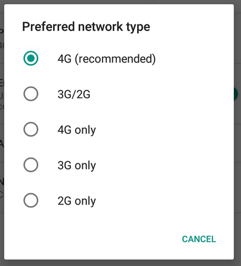

The title is a clickbait.
My current internet data plan with Airtel gives me 1.5 GB/day. If I use up my daily quota of 1.5 GB, my internet speed is throttled to 64 Kbps (8 KBps LoL), until the day ends. The next day is supposed to begin at 12:00 AM, when my speed is ought to be restored and I begin using the data from my daily quota for the new day.
However, there is an issue. The next day doesn’t exactly begin at 12:00 AM. It begins after some X minutes have passed since 12:00 AM. And this X varies a lot. On some days I have had to wait more than 2 hours for my speed to return back to normal, and on some days it took less than 20 minutes. And this is extremely irritating - having to wait for an indefinite period of time for something that you should already have. (Consumer rights, yay).
The fun fact is that they reset my data for the day, but don’t give me the speed. So if I query the USSD service to get the remaining data for the day, immediately after 12:00 AM, it shows me 1536 MB, but my speed is still throttled.
And for quite some time, I thought this is a fault in my phone or some network setting. So one day, when I had completely used up the data for the day, I waited for 12:00 AM. As soon as that happened, I tried to tweak every possible setting on my phone to check if it actually is some incorrect network setting or some eccentric behaviour of my phone. I turned the data off and then back on, I turned the airplane mode on and then off, I turned the SIM off and then back on, I edited access point names, etc.
Finally I found it. “Preferred network type”.

The selected option was 4G (recommended). I changed it to 4G only. And it worked!!! I was able to use the internet at high speed. I inferred that 4G only was the option that was the “correct” option, and now I won’t face the issue again.
Sadly, it didn’t turn out to be so. I again had the same issue the next night - 1536 MB data, but 64 Kbps speed. This time I changed the “Preferred network type” setting to 4G (recommended). And it again worked!
From this, and through subsequent experiments on the following days, I concluded the following:
- The issue is with my phone.
- Just changing the network type suffices for bringing back the speed, the chosen network type doesn’t matter.
- I can’t receive calls or messages if my chosen network type is
4G only. - The simplest working solution to regain high speed internet would be to change the network type to
4G only, and then revert it back to4G (recommended)after a few seconds.
The fourth point is the magic trick that I stumbled upon, which, I thought, as implied by the first point, would only be useful to me.
However, very recently, I asked a friend to send me something (over the internet) and they said that their daily quota limit had been exceeded, and they were waiting for the data to be credited to them. It was just past 12:00 AM, so I asked them about their ISP, and upon finding out that it was Airtel, I recommended them to try out this magic trick.
Guess what? It worked for them too! Hence, this is not an issue with my phone. (Yaay!) And therefore, I think this is something that people should know.
However, there are some questions that I still need answers for. Is this a problem only with Airtel or with other ISPs too? Are there other such magic tricks for bringing back high speed internet? And most importantly, why does this magic trick work?